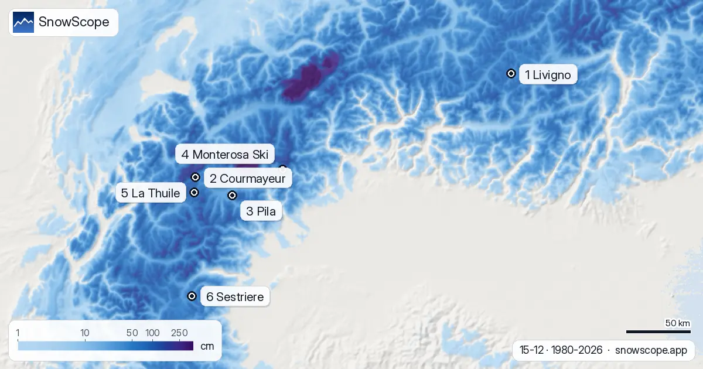

Quali località sciistiche italiane offrono il miglior rapporto qualità-prezzo a dicembre?
Per una gita in auto nel weekend dalla città più vicina a dicembre 2026, Livigno e Monterosa Ski uniscono i prezzi verificati più bassi a una neve affidabile in quota, mentre Pila mantiene una tariffa fissa. I pendii più bassi partono spesso con poca neve. La nostra storia della neve di 46 inverni passati mostra quando la neve a mezza quota diventa affidabile.
Le previsioni neve in tempo reale per Livigno nell'app SnowScopeAltezza neve, allerte powder e mappa 3D, gratis.Bilanciare il prezzo dello skipass e la neve di dicembre
Un buon rapporto qualità-prezzo significa pagare meno alle casse senza sciare su piste basse con poca neve. Livigno riduce il giornaliero adulto a 51,50 EUR e il 6 giorni a 258,50 EUR dal 28 novembre al 18 dicembre 2026. Monterosa Ski propone il prezzo online verificato più basso per 1 giorno a 40,00 EUR, salendo a 71,00 EUR nelle date di punta.
Pila applica una tariffa unica dal 28 novembre 2026 all'11 aprile 2027: 60,00 EUR per 1 giorno e 322,00 EUR per 6 giorni. Courmayeur indica 75,00 EUR per il giornaliero e 396,00 EUR per il 6 giorni. I prezzi per La Thuile e Sestriere non sono stati verificati.

Le prime settimane dall'1 al 14 dicembre
Nella nostra storia della neve di 46 inverni passati, gli impianti alla base faticano all'inizio. Dall'1 al 7 dicembre, Monterosa Ski a 1.207 m raggiunge 30 cm nello 0 % degli inverni passati, e Sestriere a 1.600 m raggiunge 30 cm nel 26 %. Livigno a 1.811 m arriva a 30 cm nel 30 % dei casi dall'1 al 7 dicembre e nel 39 % dall'8 al 14 dicembre.
Salire a mezza quota trasforma il weekend. Dall'8 al 14 dicembre, La Thuile a 2.038 m raggiunge 30 cm nel 91 % degli inverni passati, Courmayeur a 1.976 m tocca l'87 %, Pila a 2.128 m il 76 % e Livigno a 2.301 m il 70 %. Gli impianti in cima raggiungono 30 cm in almeno il 93 % dei casi ovunque.
Le settimane successive dal 15 al 28 dicembre
La neve cresce rapidamente dopo metà mese, anche se i prezzi dinamici aumentano. Dal 15 al 21 dicembre, la mezza quota raggiunge 30 cm nel 100 % degli inverni passati a La Thuile, nel 98 % a Courmayeur e nell'85 % a Livigno, Pila e Sestriere. Entro il 22-28 dicembre, anche Monterosa Ski a 2.118 m raggiunge 30 cm nell'80 % degli inverni passati.
Scegliere il momento giusto fa risparmiare a Livigno. Il suo skipass promozionale a 51,50 EUR è valido fino al 18 dicembre 2026, coprendo gran parte della settimana 15-21 dicembre quando a mezza quota ci sono 50 cm nel 50 % degli inverni passati e in cima a 2.791 m ci sono 50 cm nell'87 %. I prezzi salgono a 66,00 EUR dal 19 al 25 dicembre 2026, poi a 74,50 EUR.
Località messe a confronto diretto
Livigno offre 83 km di piste mappate e 37 impianti mappati su 979 m di dislivello, con altezze abituali al 15 dicembre di 27 cm a 1.811 m, 45 cm a 2.301 m e 81 cm a 2.791 m. Monterosa Ski ha 72 km di piste mappate, 37 impianti mappati e 1.823 m di dislivello fino a 3.030 m, dove il 15 dicembre registra in media 127 cm, mentre la base a 1.207 m ha una media di 6 cm, da 0 cm in un dicembre scarso a 24 cm in uno abbondante.
Pila dispone di 56 km di piste mappate e 16 impianti mappati su 1.190 m di dislivello, con medie di 33 cm, 44 cm e 79 cm il 15 dicembre. Courmayeur conta 42 km di piste mappate e 24 impianti mappati su 1.545 m di dislivello, con medie di 38 cm, 66 cm e 131 cm il 15 dicembre, da 60 cm in un dicembre povero a 225 cm in uno ricco a 2.749 m.
La Thuile ha 79 km di piste mappate, 17 impianti mappati e 1.140 m di dislivello, con una media di 67 cm a 2.038 m a dicembre, mentre Sestriere ha 58 km di piste mappate, 22 impianti mappati e 1.186 m di dislivello, con una media di 51 cm a 2.193 m; per entrambe non sono stati verificati i prezzi. Tra i primi 15 inverni e gli ultimi 15 inverni, lo spessore di dicembre a mezza quota è salito a Livigno da 39 cm a 52 cm, a Sestriere da 43 cm a 57 cm, a La Thuile da 64 cm a 73 cm, a Pila da 42 cm a 49 cm e a Courmayeur da 63 cm a 69 cm, mentre Monterosa Ski è rimasta a 37 cm.
Modi intelligenti per spendere meno
Chi viaggia in auto nel weekend può usare il calendario per ridurre la spesa degli impianti. Andare a Livigno tra l'8 e il 18 dicembre 2026 assicura il prezzo di 51,50 EUR quando le probabilità di avere 30 cm a mezza quota superano il 70 %. Per fine dicembre, la tariffa fissa di 60,00 EUR di Pila batte i 74,50 EUR di alta stagione di Livigno e i 75,00 EUR di Courmayeur.
Controlla il calendario online di Monterosa Ski per le date a 40,00 EUR e scia sugli impianti superiori. Con 0 cm in un dicembre scarso a 1.207 m, organizza la giornata attorno alla mezza quota di 2.118 m e alla cima di 3.030 m.
Consigli per sciatori
- Prenota Livigno tra l'8 e il 18 dicembre 2026 per lo skipass da 1 giorno a 51,50 EUR o da 6 giorni a 258,50 EUR, quando le probabilità di 30 cm a mezza quota raggiungono il 70 % - 85 %.
- Scegli il giornaliero fisso a 60,00 EUR di Pila per il 22-28 dicembre 2026, quando la mezza quota raggiunge 30 cm nell'89 % degli inverni passati.
- Controlla Monterosa Ski online per le giornate a 40,00 EUR e scia intorno a 2.118 m e 3.030 m anziché alla base di 1.207 m.
- Controlla il bollettino valanghe prima di fare fuoripista sopra i 2.723 m e verifica i siti ufficiali per i prezzi di La Thuile e Sestriere.
Altre mappe (siti esterni)
Riferimenti e crediti
- Livigno, official ski pass price list 2026-27 (PDF) www.livigno.eu/hubfs/tariffe_26-27.pdf
- Courmayeur Mont Blanc, official daily ski pass prices 2026-27 www.courmayeur-montblanc.com/skipass-e-tariffe/tariffe-giornaliere/
- Pila, official daily ski pass prices 2026-27 pila.it/en/skipass-pila/daily-skipass/
- Monterosa Ski, official dynamic pricing page 2026-27 monterosaski.eu/en/tariffazione-dinamica-monterosa-ski-19318
- SnowScope, December snow at three heights and today's snow map snowscope.app/
Su questi numeri
Neve attuale e tendenza a due settimane: previsioni SnowScope (tendenza da ECMWF e GFS, un intervallo, non una promessa). Impianti e piste: mappatura OpenSkiMap. Prezzi: le pagine ufficiali qui sotto, lette il 2026-11-13; i prezzi possono cambiare, verificare prima di prenotare.
Cita questo articolo
Per ricerca, didattica o stampa: numeri e grafici sono liberamente riutilizzabili con licenza CC BY 4.0 citando così.
SnowScope (2026), Quali località sciistiche italiane offrono il miglior rapporto qualità-prezzo a dicembre?, https://snowscope.app/blog/it/2026/11/italy-best-value-december-ski-weeks-2026.html, consultato il 2026-11-14
SnowScope (Atlas Labs). (2026, November 14). Quali località sciistiche italiane offrono il miglior rapporto qualità-prezzo a dicembre?. SnowScope snow reports. https://snowscope.app/blog/it/2026/11/italy-best-value-december-ski-weeks-2026.html
BibTeX
@misc{snowscope2026italybestvaluedecembersk,
author = {{SnowScope (Atlas Labs)}},
title = {Quali località sciistiche italiane offrono il miglior rapporto qualità-prezzo a dicembre?},
year = {2026},
month = nov,
howpublished = {\url{https://snowscope.app/blog/it/2026/11/italy-best-value-december-ski-weeks-2026.html}},
note = {Published 2026-11-14 13:29 UTC; accessed 2026-11-14}
}· CC BY 4.0 · Metodi, dati e strumenti →
Livigno: neve e temperatura per quota, quest'inverno vs lo scorso (strumenti) →
Segui Livigno
Gratis: un messaggio quando arriva la neve e il meteo ogni mattina.